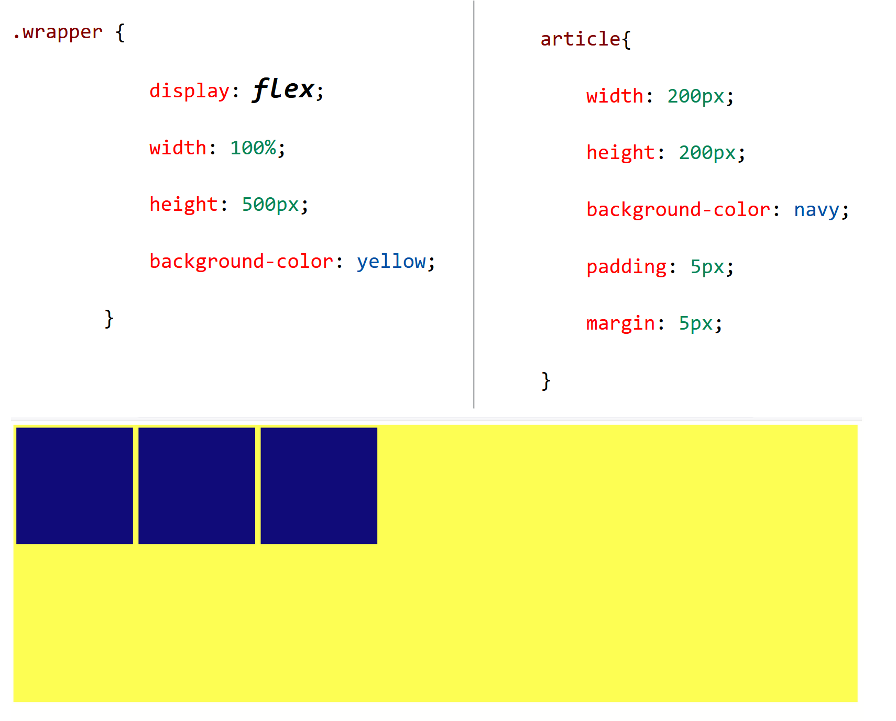
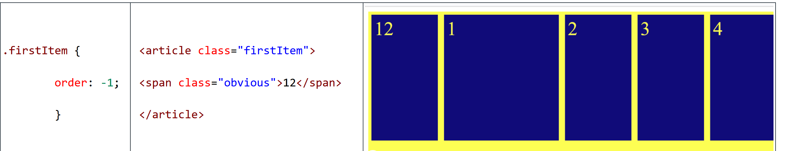
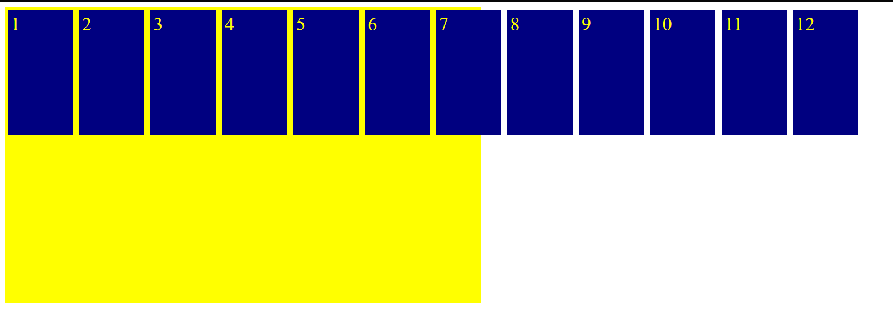
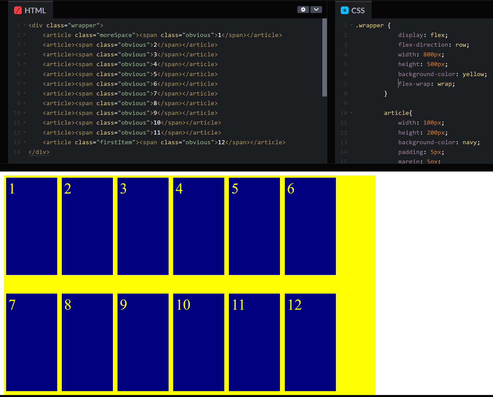
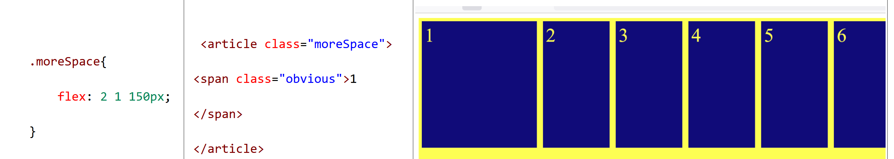

layout Convenience
Flexbox is short for flexible box. It was introduced to CSS as far back as 2009, as a web layout model. As it has evolved, it is a web layout model, a way to implement flexible sizing and support responsive design, as well as a way to order the display of items on a web page, without having to design the markup in sequence to support a particular order.
Creating Your Flex Container
Flexbox is described by setting attribute, display, to flex. All elements within the flex container are flex items, each with their own properties, but recognized as elements within a flex container.

The Flex Direction
Flex box arranges items along a main axis, horizontal(default) or vertical. The cross axis is perpendicular to the main axis, like the XY plain, if the X axis is the main axis, the Y axis is the cross axis and vice versa.
Flex items flow along the main axis. Default positioning is modified by attributes, including main-start and main-end.
If flex-direction is set to column, the main axis is vertical.
Committing Files
The flex container attribute values of row-reverse, column-reverse, reverse the order of flex items.
The order of the flex items can be set with the order property, applied to individual flex items. This alters the order in which the items appear, but not the order of the markup. By default, all of the flex items have an order number of 0, and appear in the order in which they are listed in the HTML file. When the order property is changed, the flex items are listed starting from the lowest number - this can be negative or positive.

Wrap Flex Items To Prevent Overflow
By default, items will not flow to the next line of a flex container. Instead, they will overflow.
Change this, by setting the flx-wrap property to wrap (the default is no-wrap).

Sizing Flex Items
Flex items can grow or shrink, as determined by the flex-grow, flex-shrink (space ratios for grow/shrink) and flex-basis(ideal size) properties. These are combined in the flex property.
Individual flex items can be sized differently, flex items must be dealt with individually.
If we have a class, moreSpace, and apply to an article,that article will take up twice as much space as the default when the row space is divided up between all of the flex items.